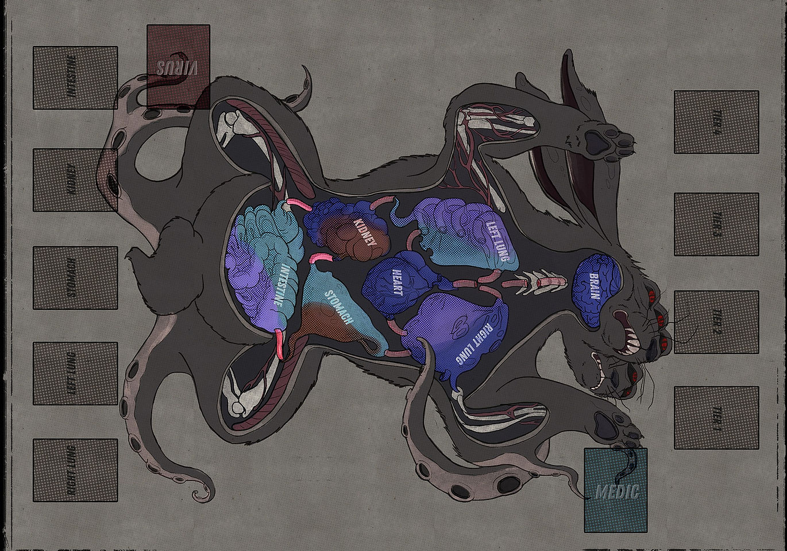
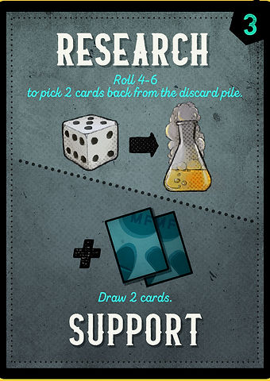
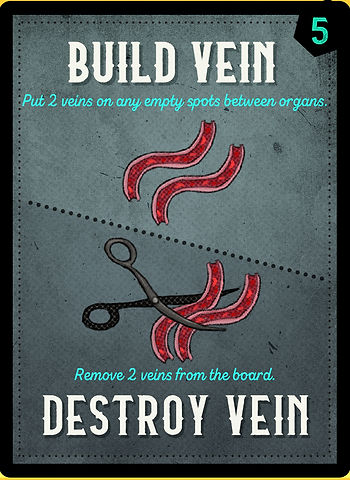
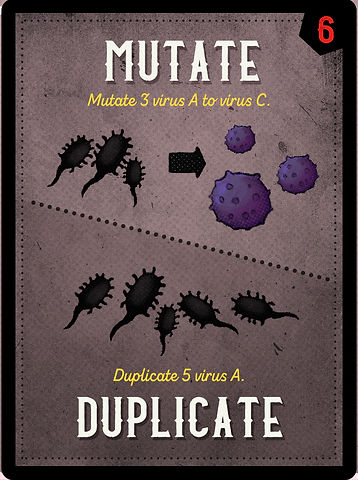
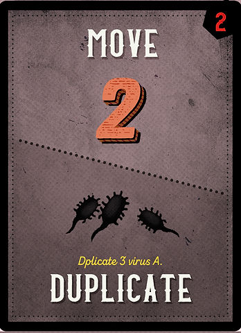
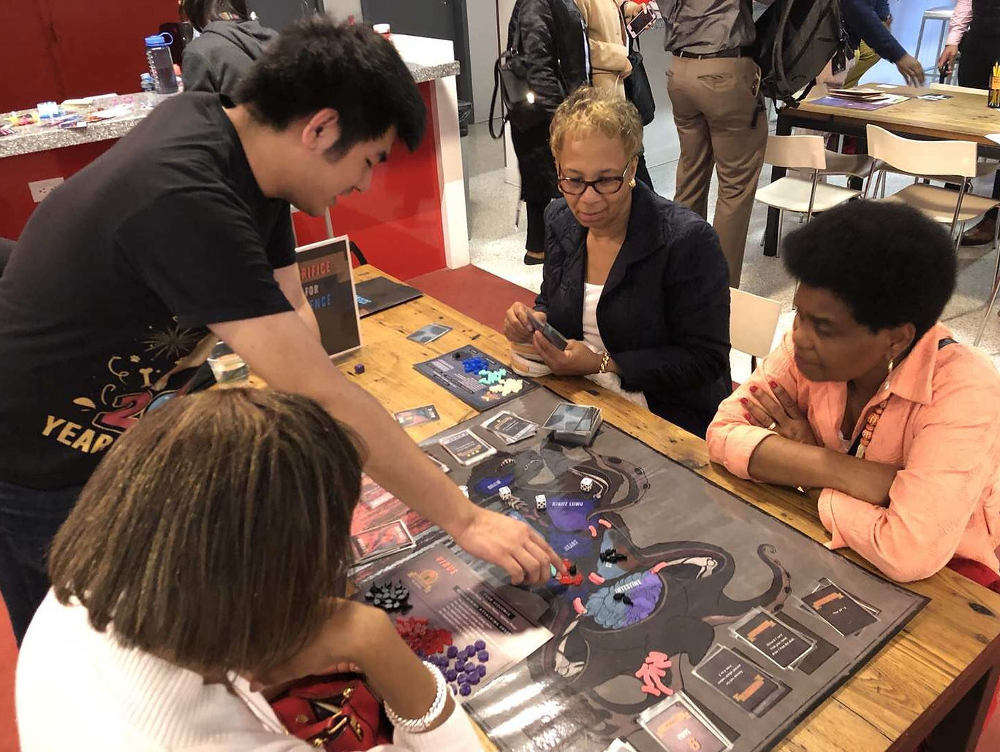

Sacrifice for Science

SACRIFICE FOR SCIENCE
ASYMMETRIC TWO-PLAYER TABLETOP GAME
SACRIFICE FOR SCIENCE is an asymmetric two-player board game where players take the role of either the Virus or the Medic and fight against each other to take control of the alien creature. The goal of the Virus is to take control of the brain and heart of the creature or survive until the Medic’s deck runs out of cards. While the goal of the Medic is to eradicate the Virus from the creature or to fully understand the Virus by achieving the major breakthrough.
Role: Lead Game Design
Collaborator: Salter Liu, Avery Holmes

Design Goal
We wanted the game to create asymmetric experiences for the Medic player and the Virus player, so we used Android: Netrunner as a reference. The Virus player, with a smaller deck, can shuffle his/her deck once the deck is empty, while the Medic player loses when he/she runs out of cards. In addition, Medics and Virus have their own unique mechanics. The Virus can upgrade by taking control of different organs, while Medics could do a surgery action to remove an organ. To create more interesting choices, we give each card two actions, and players have to choose which one to use based on different conditions.




Other than playing cards, players can also do combat and buy upgrades. In order to let players focus on playing cards and deploying strategies, we designed a simple dice rolling combat system, which ensures that players would spend less than a minute to resolve all the combats but still feel the tension.
The upgrade system adds another layer of strategy to the game and differentiates the game experience on two sides. Virus players gain upgrades by dominating different organs, while Medic players gain upgrades by killing Virus units. Thus, we predict that Virus players would tend to play more aggressively, and Medic players would be inclined to overpower Virus players in late games.
